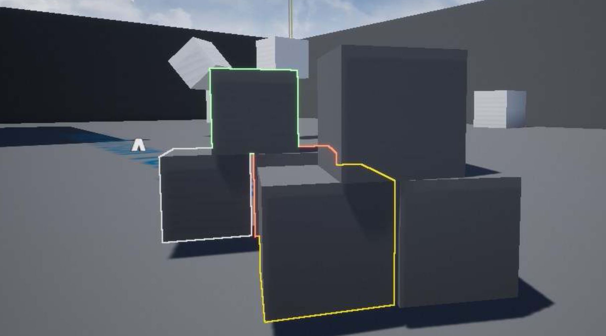

You're in for a treat because these are sneak peeks behind the scenes of my VR Multiplayer Co-op Shooter. It was made in Unreal Engine 4.
One of our game mechanics introduces a tossable beacon that can call down drop pods at the impact point. This is one of our weapons which is literally an energy rifle. Endless bullets but you need to shake the weapon to recharge the energy. What a workout!

This was a hard shader to code, basically at certain distances these outlines will fade from a visible x-ray outline to a visible outline that requires line of sight, anything further than a certain distance after that will slowly fade out to no outline.